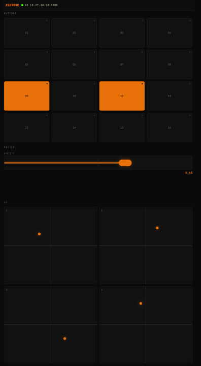
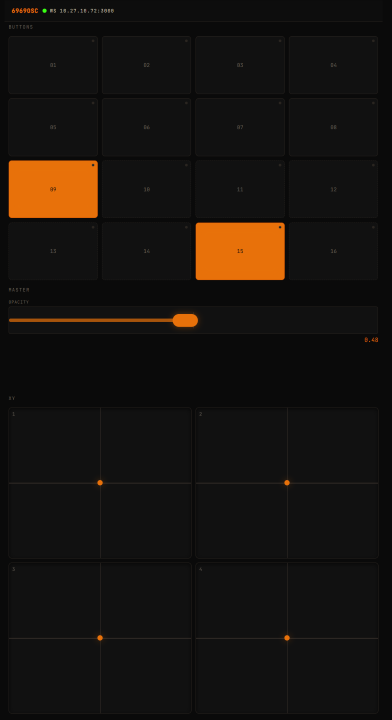

Open source · TouchDesigner · OSC
6969osc
Phone control surface — WebSocket in, OSC (UDP) out.
A browser-based control surface for your phone — buttons, toggles, XY pads, and a master fader. MIT licensed.
A Node.js server runs on your machine and serves the controller UI to any phone on the same network. Touch input is sent over WebSocket and forwarded as OSC (UDP) to TouchDesigner (default 127.0.0.1:6969) or any OSC-capable receiver.
Interface
The controller runs in the phone browser — no app install needed. It includes 16 pads (momentary and toggle modes), a master/opacity fader, and four XY pads. The status bar shows the WebSocket endpoint when connected.


How you run it
Start the server on the venue machine, then scan the QR code printed in the terminal. Your phone loads the controller UI directly from your computer’s LAN IP — both devices must be on the same Wi‑Fi or hotspot. See SETUP.md for firewall setup, TouchDesigner OSC In configuration, and troubleshooting steps.
Features
- Momentary pads, toggles, four XY pads, master fader
- Configurable OSC host, port, and rate limiting via
config.json - QR code for pairing on the local network; no app store install
Requirements
- Node.js 18+ (nodejs.org)
- TouchDesigner (or another OSC receiver) with UDP on the port you configure (default
6969) - Phone and computer reachable on the same network (some venue Wi‑Fi blocks device-to-device traffic — see SETUP.md)
Quick start
The app lives at 6969osc/6969osc in the repo. On first run, config.json is auto-generated from config.example.json if it doesn't exist.
Windows
- Install Node.js LTS.
- Double-click
START.bat. First time: Run as administrator so Windows Firewall can allow inbound TCP on the web port (default3000). - Scan the QR code with your phone.
macOS
- Install Node.js LTS (Apple Silicon or Intel).
- In Terminal,
cdinto the app folder, then./start.sh(runchmod +x start.shonce if your clone is not executable). - Scan the QR code with your phone.
If the phone can't connect, allow Node (or the web port) through the firewall in System Settings → Network → Firewall. Full steps are in SETUP.md.
Manual / development
npm install
npm start
You still need config.json and an open firewall rule for the HTTP port where applicable.
Download
Packaged zip with the app at 6969osc/6969osc:
Repository
-
Source:
6969osc/6969oscon GitHub -
README:
6969osc/6969osc/README.md - License: MIT — LICENSE